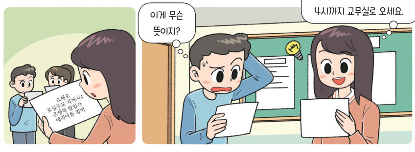

쪽지를 한 글자씩 리스트에 담고 맨 뒤부터 거꾸로 꺼내면 비밀 쪽지가 된다. 지역 변수가 있는 함수로 비밀 쪽지를 만들고 해석해 보고, 친구와 함께 나만의 암호 규칙을 만들어 보자.
문제 상황 안내판에 사용 방법을 알려 주고, 잠긴 자물쇠를 누르면 쪽지 내용을 입력받아 비밀 쪽지로 만든 후 안내판에 알려 준다. 열린 자물쇠를 누르면 비밀 쪽지를 해석하여 알려 주는 프로그램을 만들어 보자.
| 안내판(글 상자) | |
| 잠긴 자물쇠(오브젝트) | |
| 열린 자물쇠(오브젝트) | |
| 카운트(변수) | |
| 입력된 쪽지(리스트) | |
| 비밀 쪽지(리스트) |
| 사용법 안내 및 초기화 | |
| 비밀 쪽지 만들기 | |
| 비밀 쪽지 해석하기 |
| 잠긴 자물쇠를 누르면 쪽지 내용을 입력받아 입력된 쪽지 리스트에 저장되는가? | |
| 입력된 내용이 거꾸로 비밀 쪽지 리스트에 저장되는가? | |
| 자물쇠를 누르면 비밀 쪽지를 해석하여 알려 주는가? |
비밀 쪽지를 만들고 해석하는 방법을 아래 예시처럼 변경해 보자. 입력 예시 ‘오늘 11시에 우리 집에서 만나자’ → 출력 예시 ‘오 X 늘 X (빈칸) X 1 X 1 X 시 …’ (X는 입력된 글자 중 무작위로 저장된다.)
| 함수 안에서 만든 지역 변수는 함수 밖에서도 그대로 쓸 수 있다. | |
| 결괏값이 있는 함수는 다른 블록 안에 값처럼 넣어 쓸 수 있다. |
| 평가 기준 | 스스로 평가 |
|---|---|
| 리스트와 함수를 이용하여 비밀 쪽지 프로그램을 작성할 수 있는가? | |
| 친구와 협력하여 새로운 규칙을 프로그램으로 구현하고 발표할 수 있는가? |